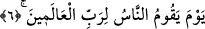

5. Büyük bir günde
İşte onlar o büyük günde diriltilecek olduklarını zannetmiyorlar mı? Sonra diriltilip
de bir zerre veya hardal miktarı şeyden hesaba çekileceklerini zannetmiyorlar mı?
Âyette “zannetmek” fiili kullanılıyor. Zan aslında şek ve vehim sınırında olan zayıf bir
inanç olmakla birlikte bu kadarcık bir zanna sâhip olan kimse bile bu çeşit çirkin fiilleri
yapmaya cesaret edemez. O halde öldükten sonra dirileceğine kesin olarak inanan kimse
buna nasıl cüret edebilir? Âyet-i kerimede zan fiilinin zikredilmesi teraziden ve
ölçekten eksiltmeyi engellemede ifâdeye bir mubalağa ve abartı katmak içindir. Yoksa
bir mü’min için öldükten sonra dirilme ve hesaba çekilme konusunda sâdece zan yeterli
değildir. Tam tersine mü’min olan kimsenin buna kesin biçimde inanması gerekir.
6. Öyle bir gün ki, insanlar o günde âlemlerin Rabbinin huzurunda divan
duracaklardır.
“Rabbu’l-alemîn” ifâdesinin başında gizli bir muzaf vardır. Buna göre âyetin anlamı;
öyle bir gün ki, insanlar o günde, başka bir şey için değil, sâdece alemlerin Rabbinin
emri ve hükmü karşısında divan duracaklardır demektir. Veya; insanlar o günde
alemlerin Rabbine hesap vermek için duracaklardır, şeklinde de anlayabiliriz. Böylece
onlar divan duracaklar, ölçü ve tartı aletinden çaldıkları ortaya çıkacak, yaptıklarının
karşılığını göreceklerdir.
Âyeti şöyle anlamak da mümkündür: Onlar kabirlerinden, âlemlerin Rabbinin
ruhlarını cesedlerine geri iâde etmesi için kalkacaklardır.
Rivâyete göre onlar Allah’ın huzurunda dünya senesiyle tam kırk yıl, bir başka
rivâyette üçyüz sene duracaklardır. Her birinin teri kulaklarının yarısına erişecek ve
onlara herhangi bir haber gelmediği gibi haklarında herhangi bir emir verilmeyecektir.
Şair der ki:
Bu makam heybettir; kimsenin bu konuda konuşmaya gücü yoktur.
Mü’min Hakk’ın huzurunda farz namazı eda edeceği kadar kalacaktır.
Allah’ın “Rabbu’l-alemîn” sıfatının özel olarak getirilmesi, onun her şeyin mâliki ve
mürebbisi olduğuna işâret etmek içindir. Dolayısıyla dünyada iken güçlü olan hiçbir
zâlim onun karşısında duramayacaktır. Çünkü güçlü zâlim, O’nun kudret kabzası içinde
emrine amade ve boyun eğmiş haldedir. Allah Teâlâ hiçbir şeyi kendi hâline
bırakmayacak hattâ zayıf olan mazlumu da kendi hâline terk etmeyecektir. Çünkü